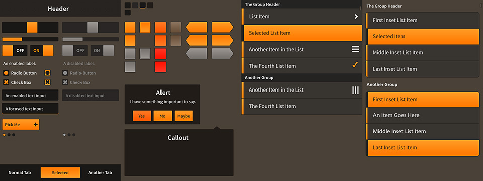

Original design sources for Feathers example themes
For those looking to tweak the example themes provided with Feathers, the following Photoshop documents may be of use.
Download Feathers to get the original PNG and TPS files used to build a theme's texture atlas with Texture Packer (version 3.0). Export new PNG graphics from the PSDs below to expand or modify a theme.
Metal Works Mobile Theme

Metal Works Desktop Theme
Minimal Mobile Theme